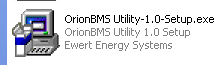
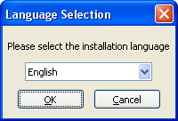
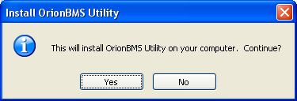
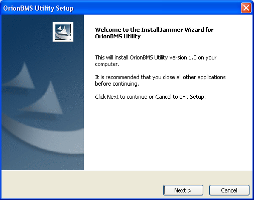
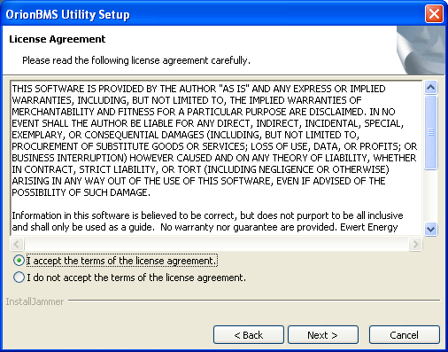
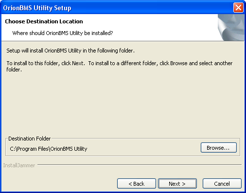
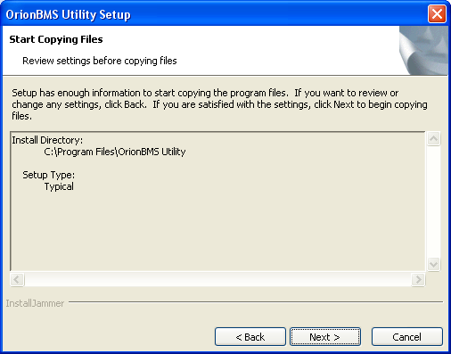
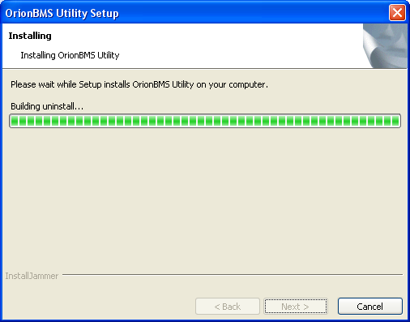
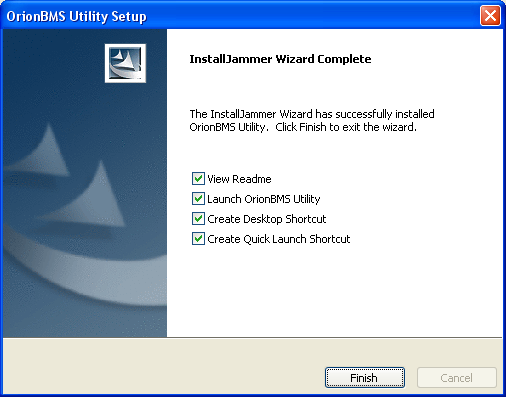

This installation guide is designed for users of Microsoft Windows. Currently the following versions of windows are supported:
Windows 98/ME
Windows 2000
Windows XP
Windows NT
Windows Vista
Windows 7
Please download the latest version of the software from www.orionbms.com before continuing with this instruction guide.
Steps:
Opening the installation application: The icon may look different depending on the computer being used.

Selecting a language: There are multiple different languages supported for the installation process, however the actual application is only available in English.

Confirming installation: In order to install the application, the user must agree to install it.

Welcome screen: This screen welcomes the user to the installation process.

License agreement: There is a license agreement that must be accepted before the installation can take place.

Selecting a target directory: The installation wizard allows the user to specify where the program will be installed. The default values are fine for most installations, however more advanced users may wish to change this.

Confirm location: This gives the user a chance to confirm the target directory specified in step #6 before proceeding.

Installing: This screen indicates that the utility is installing and may take a few moments to complete.

Complete: This screen indicates that the process has been completed and the utility is successfully installed.

| < Installing Software | Installation Guide for Linux > |